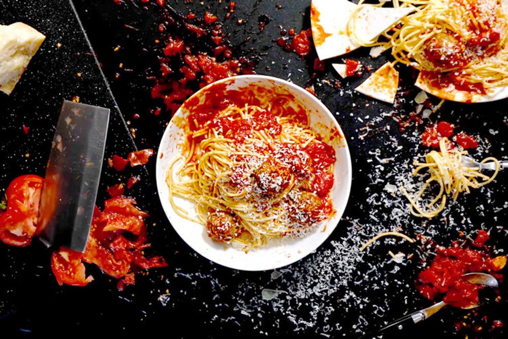

Quentin Tarantino

Description
You've known a bunch of recipes from the past that are not popular. Ever wondered what to do with them? In this recipe we will show you how to
use all the good parts of them and present it as your own.
Ingredients
- Samuel L. Jackson
- Christoph Waltz(for an award-winning recipe)
- A song that you never knew existed but is about to become a cult classic
- Gravelly voices
- Swearing to taste
- A pack of Red Apple cigarettes for the smokey presentation
- Optional Background Music
Steps
Chapter 3
- Go under(the)cover of your pot and find yourselves in a high stakes conversation about food
- Insert a generous amount of feet.
- Sprinkle a bunch of pop culture references to garnish.
Chapter 2
- Try overcooking this recipe, I dare ya! I double dare you, RecipeSurfer! Think ‘overcook’ one more goddamn time!
- At this point our dish will be bathed in a lot of blood.
- So please make sure that the dish,”Don’t die on you.”
Chapter 1
- Spit a bunch for the consistency.
- Time to drive around and talk about that food. If on diet, replace with driving around and listening to music.
- Grab some shady(ingredient) from the trunk(Also, try putting some shady (ingredient) in the trunk).
Chapter 4
- Time for a big Mexican Shake-off to bring all the ingredients together.
- Stir all of your dish in a very graphically violent method. That’s what’s going to bring the change to the final stage of cooking.
- Drive away to live a happyily ever after dinner.
If you cooked this recipe well enough you might notice that Quentin himself was part of an earlier chapter.
This recipe was Written & Prepared by Quentin Tarantino.
References
Return to Homepage